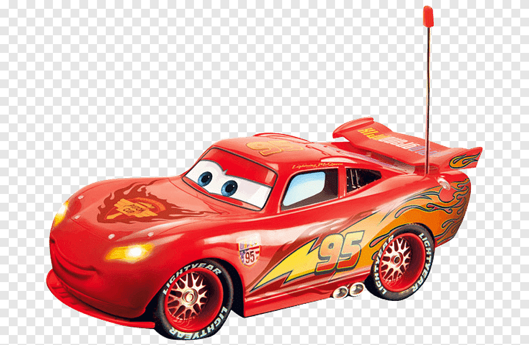

Running was one of the simplest joys of childhood, offering a sense of freedom with every step. Whether racing friends across the playground or sprinting barefoot through the grass, it created moments filled with laughter, energy, and excitement. Those carefree runs became treasured memories that shaped a love for movement and adventure.
As a child, running wasn’t just exercise—it was imagination brought to life. Every open field became a racetrack, every street a challenge to go faster. The wind, the sunshine, and the thrill of moving freely made running unforgettable. These early experiences built confidence and sparked a lifelong appreciation for staying active.
Solving jigsaw puzzles was a calm and comforting part of childhood, offering quiet moments of focus and curiosity. Each piece felt like a small victory, slowly revealing a colorful picture. Sitting on the floor, sorting shapes and colors, created lasting memories of patience, concentration, and the joy of completing something meaningful.
Jigsaw puzzles turned rainy days into adventures. The challenge of finding just the right piece encouraged problem-solving and imagination. Working alongside family or tackling a puzzle alone made the experience rewarding and memorable. Those early puzzle-solving moments helped build determination and left a warm sense of accomplishment that stayed into adulthood.
Balls are classic toys that inspire endless fun and physical activity. From kicking a soccer ball to tossing a soft rubber ball, children develop coordination, balance, and motor skills. Balls encourage outdoor play, social interaction, and teamwork, making them essential for healthy growth and playful learning.
I remember running across the yard with a bright red ball, laughing with friends as we played catch. The thrill of scoring a goal in an impromptu soccer game or bouncing the ball against the wall created simple yet joyful memories. Balls made every day an adventure filled with energy.

Toy cars spark imagination and creative play. Children push them around, race them on tracks, or build miniature cities, exploring movement, speed, and storytelling. Toy cars help develop fine motor skills, hand-eye coordination, and problem-solving while offering endless opportunities for solo play or interactive games with friends.
I loved lining up my toy cars on the living room floor, imagining thrilling races and daring rescues. Hours passed as I pushed them along imaginary streets and tracks, narrating stories in my head. Toy cars brought my childhood to life, combining creativity, excitement, and the joy of independent play.
Back to top